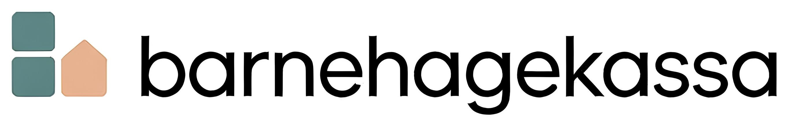

barnehagekassa.noVelg observasjonsmetode, fyll ut skjemaet og skriv ut eller lagre som PDF. Tilpasset barnehagens pedagogiske arbeid.
Velg metode ut fra hva du ønsker å finne ut. Skjemaet tilpasses metoden du velger.
Følg ett barn intensivt over 2 til 5 minutter. Beskriv nøyaktig hva du ser og hører i den venstre kolonnen. Tolkinger, spørsmål og tanker hører til i den høyre kolonnen.
| # | Beskrivelse (hva skjer, ordrett) | Tolking og refleksjon |
|---|
En praksisfortelling er en fri, konkret beskrivelse av en situasjon slik den utspilte seg. Skriv i presens og med detaljer om hva som ble sagt og gjort. Tolkinger hører til i refleksjonsdelen.
Sosiogrammet kartlegger sosiale relasjoner i gruppen. Legg inn barna, registrer hvem som søker kontakt med hvem, og se mønsteret i en matrise.
Registrer hver gang du ser at et barn søker eller etablerer kontakt med et annet.
Definer atferden du vil observere på forhånd. Registrer deretter hver gang atferden oppstår med tidspunkt og kontekst. Brukes for å se mønstre i frekvens og situasjon.
| # | Klokkeslett | Beskrivelse av hendelsen | Kontekst og mulig utløser |
|---|
Til bestemte tidspunkter (f.eks. hvert 5. minutt) noterer du hva barnet gjør akkurat da. Over tid gir dette et bilde av barnets aktivitetsmønster og sosiale deltakelse.
Systematisk kartlegging av barnets språkutvikling innenfor åtte sentrale områder. Fylles ut basert på observasjon i naturlige hverdagssituasjoner over tid, ikke i testsituasjon.
For hvert punkt: velg Observert (atferden er godt etablert), Under utvikling (av og til, ikke konsistent) eller Ikke ennå.